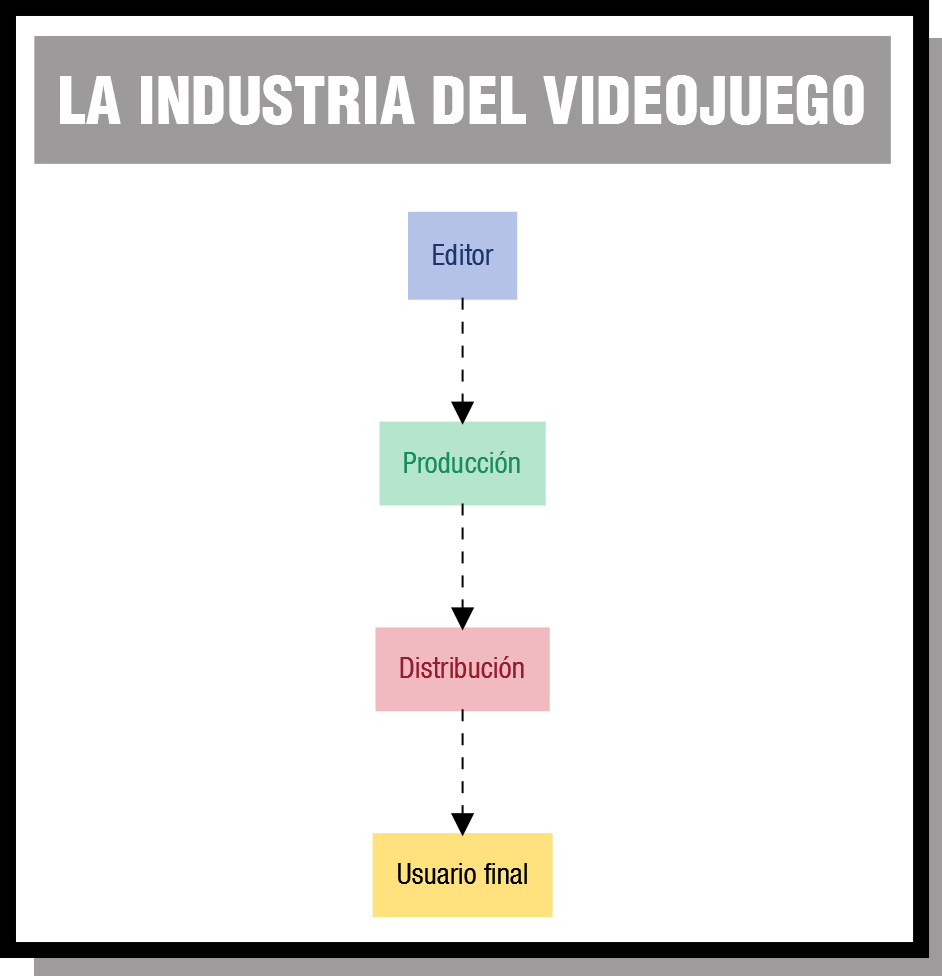

El hecho de que un usuario final disfrute de un videojuego es el resultado del esfuerzo de muchos elementos que han de trabajar coordinados. Lo primero que podemos preguntarnos es ¿de dónde sale la inversión inicial para pagar el desarrollo? Normalmente procede de un editor o productor que adelanta parte del dinero que espera a recibir por las ventas del videojuego. Dado que es la entidad que paga, el editor suele tener gran poder de decisión en el desarrollo.
El desarrollador (puede ser una empresa o un particular) es el encargado de diseñar e implementar el videojuego. Suele estar especializado en unos determinados géneros y/o plataformas (por ejemplo, juegos de rol multijugador en ordenadores personales). Respecto al desarrollador podemos distinguir tres casos según los proyectos que desarrollen:
- Un desarrollador interno es el que trabaja siempre para el mismo editor o fabricante de hardware.
- Un desarrollador de terceros firma contratos con los editores para llevar a cabo un proyecto concreto en particular. De hecho, la misma empresa desarrolladora puede tener a la vez proyectos con distintos editores.
- Un desarrollador independiente es un equipo pequeño, puede que incluso unipersonal. Suele autopublicar sus propios juegos y, al no estar atado a un editor, tienen plena libertad creativa. Eso permite que surjan ideas innovadoras que nunca recibirían dinero de un editor que las percibiría como una inversión arriesgada. La falta de recursos económicos suelen suplirla con soluciones y productos ingeniosos. A la hora de escribir estas líneas hay un repunte de este tipo de equipos debido a que los costes de distribución que existen en los dispositivos móviles son muy bajos.
La etapa de distribución es la encargada de hacer llegar el videojuego a las estanterías de las tiendas o a las tiendas de descargas digitales. Es aquí donde se genera el beneficio para el desarrollador y/o el editor. Hay que tener en cuenta que el distribuidor se lleva parte de esas ganancias.
{kind=link}